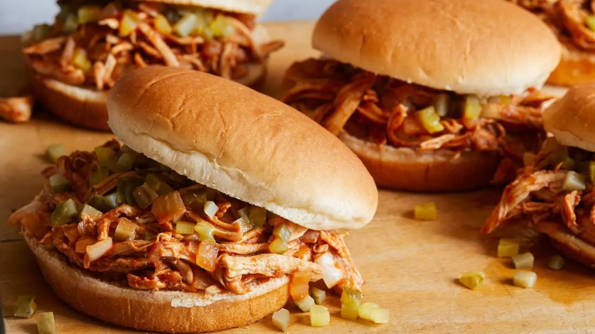

Shredded Chicken Simmer

This is an easy, quick, and tasty meal that I grew up on. This should make about 6 servings and is good hot or cold.
- 1 cup Chicken Stock
- 1 bottle Mexican Beer
- 4 pieces, 6 ounces each boneless, skinless chicken breast
- 2 Tbls oil
- 2 cloves garlic, chopped
- 1 medium onion, peeled and finely chopped
- 2 Tbls Worcestershire sauce, eyeball it
- 1 Tbls Hot Sauce (tobasco or the like)
- 2 Tbls grill seasoning blend, (Montreal steak seasoning)
- 3 Tbls dark brown sugar
- 4 Tbls tomato paste
- 1 large sour deli pickle, chopped
- 6-8 slices sweet bread and butter pickles, chopped
- 6 sof sammach buns, such as soft burger rolls, or the cheapest whitebread you can find
- Bring liquids to a simmer in a small to medium skillet and slide in the chicken breast meat. Gently poach the chicken 10 minutes, turning once about after 5 minutes.
- While chicken poaches, heat a second medium skillet over medium low heat. To hot skillet, add extra-virgin olive oil and garlic and onion and gently saute until chicken is ready to come out of poaching liquids. Combine the next 5 ingredients in a medium bowl and reserve.
- When the chicken has cooked through, add 2 ladles of the cooking liquid to the bowl, combining with the sauces, spices, brown sugar and tomato paste. Once the liquids and seasonings are combined, remove chicken, slice it, and transfer to the medium bowl. Using 2 forks, shred the chicken and combine with the liquids. Add the shredded chicken to the onions and garlic and combine well. Simmer together 5 to 10 minutes, using extra cooking liquids to make your chicken as saucy as you like.
- Combine sour and sweet pickles in a small bowl. Split rolls and fill with scoops of shredded chicken. Top with pickle relish and serve.
Home